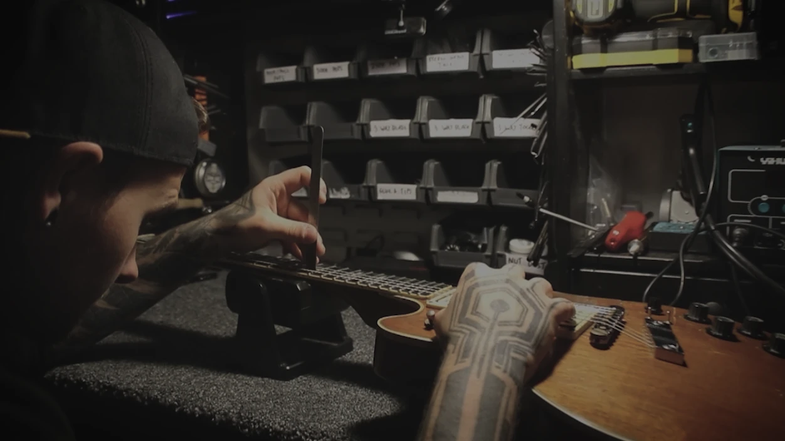
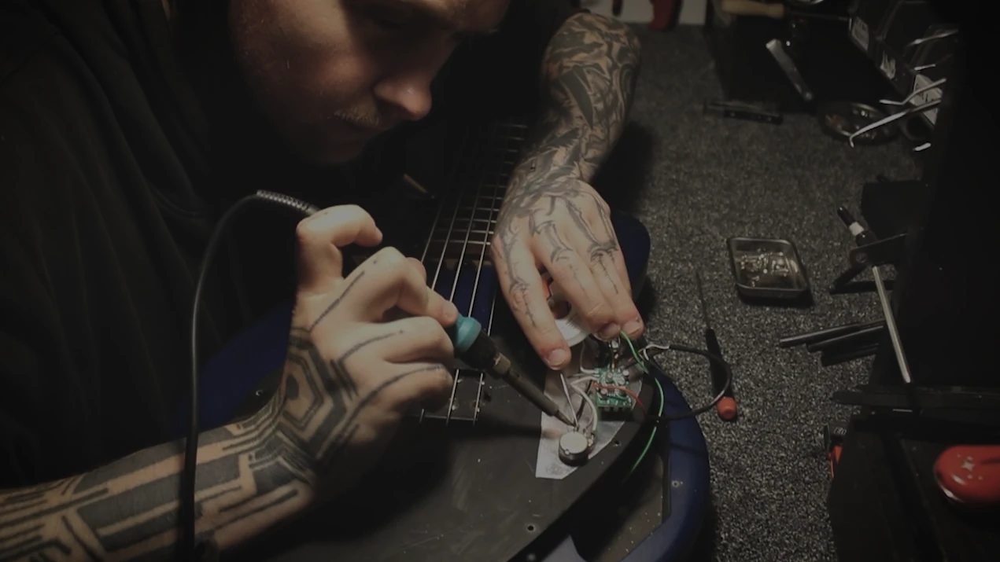
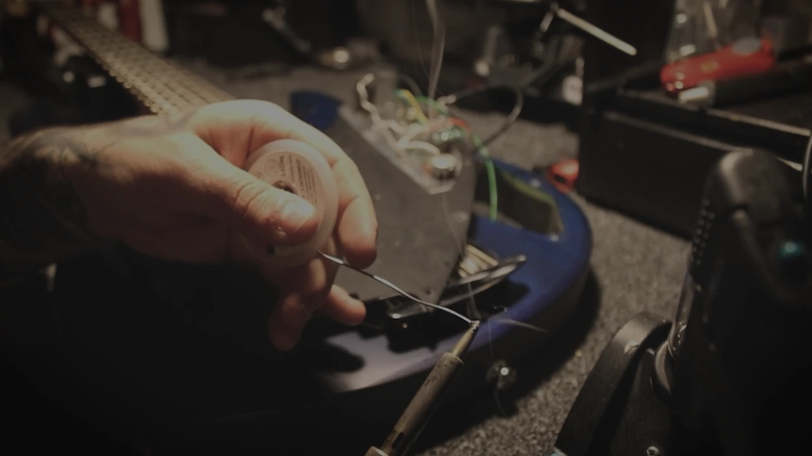
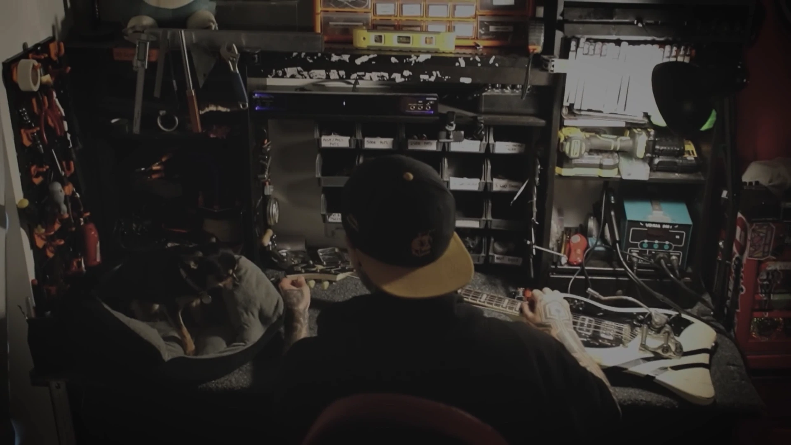

Built out of obsession with the thickness and chaos brought on by the legendary Big Muff,
KOZEL is a combination of components carefully selected from schematics of the Triangle,
Rams Head and Sovtek. The result? A wall of FUZZ that can be used to intentionally break your
signal or your ears, however you see fit!
Handmade in Brighton, England; With a fully analog signal path engaged through a
true-bypass circuit
DETAILS
Powered by 4x NOS silicon transistors and paired with carefully selected diodes and coupling
caps, KOZEL is a versatile device able to go from a dynamic soft layer, to tearing your signal
apart whilst keeping the low end tight and retaining your note definition at every stage.
With a variety of tone shaping controls, KOZEL will bend to your will while destroying everything
it touches.
CONTROLS
KOZEL Features 10 Controls to help you dial in your destruction to the closest
frequency:
VOLTS: Sets the amount of current that gets fed into the circuit; ranging from full power to
gradually draining to simulate a dying battery, giving spitty and broken tones.
*This control can react differently depending on the input signal, and will shut off if pushed past
its limit*
LEVEL: Sets the overall output volume
CLAMP: Controls the threshold of a built in gate; starting at a fully open path, to an aggressive
clamp causing your signal to split as it travels through.
*This control can react differently depending on the input signal, and will shut off if pushed past
its limit*
MID CURVE: Changes the shape of the mid frequency EQ curve; allowing you to select a
specific frequency to push depending on your current scenario and needs
*This control is linked to the “PUSH” knob (see below)*
● Upper Mids
● Standard Curve
● Lower Mids
PUSH: Changes the position of the peak of the mid frequency curve allowing you to blend
between the original and the newly selected curve.
*This control is linked to the “MID CURVE” switch (see above)*
FREQ: A wide set tone control: Sweeping from trashy and trebly when fully clockwise to tight
and bass heavy when fully counter-clockwise.
*This control is linked to the “TONE BYPASS” switch (see below)*
TONE BYPASS: When switched “ON”: the “FREQ” knob will react as intended. When switched
“OFF”: the control is removed from the signal path, slightly boosting overall volume and making
certain frequencies more prominent.
*This control is linked to the “FREQ” knob (see above)*
NOISE: Sets the amount of gain being pushed from the circuit. From a touch of drive when fully
counter-clockwise, to absolute destruction when fully engaged.
SPECIFICATIONS
Current draw: 100mA
Enclosure Dimensions:
● Length: 120mm
● Width: 94mm
● Height: 42mm
SERVICE & SETUP
Does your instrument feel or look like it could do with some love? A service could be due!

×
SERVICE & SETUP
This
includes:
● A deep clean of the fretboard, body and hardware
● A restring with your desired set
● Truss rod adjustment to the ideal relief
● Action adjustment to your desired height
● Intonation adjustment for tuning stability up the neck
● Electronic clean and check over
Prices £50+
ELECTRONIC REPAIRS
Hearing a weird crackle or hum? Intermittent or lack of signal? Or maybe you want a different sound? Electronics are your solution!

×
ELECTRONIC REPAIRS
I can replace the following:
● Output jacks
● Volume or Tone Potentiometers
● Pickup and Various Circuit Switches
● Pickups
● Preamps
● Full Wiring Harness
Prices £30+
HARDWARE REPAIRS
Something snapped? Turning? Or not turning enough? Might be time to look at replacing some parts!
×
HARDWARE REPAIRS
I can help with:
● A replacement nut with your desired material
● Swapping out broken tuning pegs
● A replacement saddle with your desired material
● Stripped or threaded strap buttons
● Replacing bridge parts
● Upgrading current hardware
Prices £20+
FRETWORK
We all love a low action, but dealing with divots, buzz and choking isn’t worth it! If you’re losing your note, your frets might need some work!
×
FRETWORK
Your frets might need the following:
● Levelling
● Recrowning
● End Dressing
● Polishing
Prices £70+
MODIFICATIONS
Sometimes, stock just isn’t enough. If you want more versatility, sustain, or simply more noise at your fingertips, mods are the way forward!

×
MODIFICATIONS
Here’s a few examples:
● Coil-Split
● Out-of-Phase
● Rhythm Circuit
● Killswitch
● Straight to output jack
● Vintage Wiring
Prices £30+
M O R E
Something else?

"I have taken multiple guitars for a variety of work to Wyatt and I can’t recommend the service any higher! With such a great depth of knowledge and experience, work is carried out to an amazing standard! Wyatt is incredibly friendly and always willing to offer support and help!"
- Kali Lloyd
"I've taken multiple guitars to Wyatt 4 or 5 times now for guitar setups and can honestly say that he does an excellent job. For a fair price, Wyatt will give you the perfect setup for your guitar and explains clearly what he has done to get it that way..."
- Luke Evans
"Wyatt is an absolute lifesaver for any guitarist! I’ve been taking my guitars to him for several years now and he is always quick to recognise any issues I’m having, explains everything clearly, and gives a fair quote every time..."
- Tyler McIvor
"Guitar wizard! Wyatt has set up all of my basses and they play like butter. He's even brought back to life an old bass I had rotting away in an attic for 15 years. Highly recommended."
- Martin Dodd
"Best Guitar tech I know. Connor is very skilled and reliable. He's been servicing, customising, and upgrading my guitars for years. Can't recommend him enough."
- Ash Purchese
"Thanks so much for great set up and spring clean on my 335 - playing better than ever. Will definitely use you again 5* service"
"I have taken multiple guitars for a variety of work to Wyatt and I can’t recommend the service any higher! With such a great depth of knowledge and experience, work is carried out to an amazing standard! Wyatt is incredibly friendly and always willing to offer support and help!"
- Kali Lloyd
"I've taken multiple guitars to Wyatt 4 or 5 times now for guitar setups and can honestly say that he does an excellent job. For a fair price, Wyatt will give you the perfect setup for your guitar and explains clearly what he has done to get it that way..."
- Luke Evans
"Wyatt is an absolute lifesaver for any guitarist! I’ve been taking my guitars to him for several years now and he is always quick to recognise any issues I’m having, explains everything clearly, and gives a fair quote every time..."
- Tyler McIvor
"Guitar wizard! Wyatt has set up all of my basses and they play like butter. He's even brought back to life an old bass I had rotting away in an attic for 15 years. Highly recommended."
- Martin Dodd
"Best Guitar tech I know. Connor is very skilled and reliable. He's been servicing, customising, and upgrading my guitars for years. Can't recommend him enough."
- Ash Purchese
"Thanks so much for great set up and spring clean on my 335 - playing better than ever. Will definitely use you again 5* service"